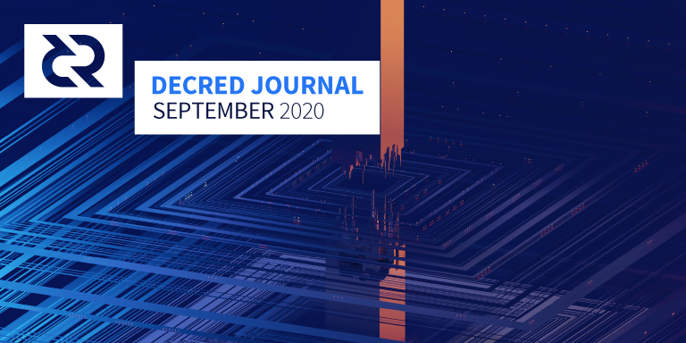

Decred月报 – 2020年9月

图片: by @saender
九月重点:
- 经过全面审查后，去中心化国库支付代码已完成合并。
- dcrdex正在解决早期测试中发现的许多复杂去信任交易方案，第一次主网交换在十月初完成，正式发行版应该很快就可以投入使用。
- 第一个关于Politeia的RFP提案（更改decred.org上的消息传递）获得批准，并收到了4个候选提案。不久将开始投票。
- 6月份批准的提案dcronchain.com 链上指标网站现已启动。
- withdecred.org门户网站已经启动，已提交相关提案以资助奖品，该提案已于10月初获得批准。
开发进展总结
除非另有说明，否则此处报告的工作仅限为“合并到主核心存储库”状态。这意味着这项工作已经完成、审查并集成到高级用户可以构建和运行的源代码中，但对于普通用户来说，还不能在发布的二进制文件中使用。
dcrd:
去中心化国库支付被合并到主数据库中。自初始计划发布以来，获得了576条评论意见，更改了115个文件，添加了1.5万行代码，花费了5个月的时间。目前已从其它项目中撤出了几名开发人员，以彻底检查和测试新共识的关键代码。感谢大家为这一重大变化所做的辛勤工作！
DCP0006共识变化的描述文件正在审查中。
国库代码合并的后的工作:
- 单向迁移数据库以支持新的国库支付代码部署
- 跟踪内存池中的tspend（国库支出）交易
- 在节点启动时中继tspend交易（这是为了帮助挖矿节点和投票钱包及时发现tspends）
- 新的RPC命令来统计tspend交易的投票计数（初步实现内存池中的tspend或已挖掘的tspend查询）
- 从代码中删除了footguns以计算tspend窗口值
- 重新设计封装了
standalone的一致性，并使测试覆盖率恢复到100％
其它合并工作:
@matheusd编写了一个独立的工具来生成tspend工具，该交易可用于无间隙设置（无需与基础dcrd建立网络连接）。它与@jrick的ss工具结合使用，用于后量子文件和流加密。
- 增加去中心化国库支出的支持，包括网络运营商生成国库密钥新工具
- 转储扩展的公共密钥时发出警告（如果xpub与任何帐户私钥组合泄漏，则将显示该帐户的所有私钥）
- 变更零散购票
- 将未发布的交易保存到数据库中（有必要防止以前的某些钱包输出在重新启动期间被双重花费，或保持部分签名的TX；这将由vspd客户端使用）
- 新标记，仅手动添加故障单，而不通过网络同步发现故障单（vspd管理员将使用此标记，以防止用户通过重复使用其投票地址来获得免费投票。设置此标记后，只能通过以下方式将故障码添加到vspd中：适当的API）
- 为P2SH listunspent结果添加兑换脚本（这是针对dcrdex的）
- 支持vspd
- 实现的sendrawtransaction
- 对vspd和dcrdex客户端进行的广泛测试有助于发现并修复bug
- 从pi-ui引用复选框组件
- 继续重构功能组件和CSS模块
- 多个bug修复
进行中：
CMS:
进行中：
来自@lukebp的状态更新：
在过去的一个月中，大多数的Politeia开发都集中在tlog上。与现有politeia功能匹配的前端和后端工作已完成。接下来的几周主要关注测试日志，解决bug，编写文档以及将测试覆盖范围。尚待实现的功能是能够检索特定Politeia数据的包含证明。politeiad后端目前支持此功能，但是需要添加相应的politeiawww路由，以及在GUI中显示/下载包含证明的方式。此功能将在启动前添加。
vspd:
- 将代码库更新为Go 1.13
- 修复重新连接 错误
- 移植上游工作的PR已更新，所有工作已完成至v0.11.1-beta版本。这将使我们与当前最新的lnd版本保持一致。
- 增加带有过滤器和无限滚动的订单历史视图，以及具有所有匹配项和相关交易输出的订单详细信息视图
- 显示锁定在合约中的金额并更新余额
- 添加
match_status和order_status路线不寻常的情况下恢复的测试，如笔记本电脑中止或连通性差导致的客户错过了发现的revoke_match步骤（重新启动dexc程序固定它，但它是UX差） - 改进的重新连接处理
- 更强大的丢失匹配处理
- 返回活动订单的
connect响应 - 在不再需要的更多情况下解锁硬币（阅读此随机注释以了解在不信任交换协议中必须考虑多少个情况）
- 用户惩罚通知
- 更好地赎回交易处理
- 多个操作失灵检查修复
- 需要客户端RPC密码
- 在用户界面中可启用调试日志记录
- 许多内部更改和bug修复
合并了来自4个贡献者的35个PR ，添加了9K行代码以及删除了2.6K行代码。
Twitter民意调查显示了大家希望在DCRDEX主网上支持LTC交易对。
由#dcrdex协调的首次DCR-BTC主网原子交换在昨天进行。测试和开发仍在继续，但讨论内容已经转移到软件分发和教程上。@decredproject的精彩时刻。（@chappjc10月9日）
- 更新 中文 翻译
- bug 修复
进行中：
- 显示Politeia 提案
- bug 修复
进行中：
- 已更新至Rosetta规范的v1.4.4，其中包括构建，签名和发布交易的功能。该
check:construction规范对应的rosetta-cli的测试套件正在通过此PR。
Rosetta v1.4发布了用于以标准格式构造交易的Construction API（以前称为Wallet API），当我们在6月宣布Decred的Rosetta实现时，该API尚未完成。最新的dcrros支持此API，并且正在努力使其与规范保持一致，以及Decred即将到来的共识更改。
docs:
- Ticket Selection 页面 移动到dcrdocs
- 为Decred中使用的txscript系统添加了概述和操作码参考（这是一种简单的，基于堆栈的，类似于Forth的编程语言）
- 增加 Latam 贡献者
- 后端更新
其他：
人员
截至10月1日的社区统计数据：
- Twitter 粉丝:: 40,790 (-26)
- Reddit 订阅: 9,929 (+23)
- Matrix #general 用户: 197 (+23)
- Discord 用户: 1,396 (+2)
- Telegram 用户: 2,434 (-34)
- YouTube 订阅: 4,210 (+30), 浏览: 156K (+1.7K)
- LinkedIn 粉丝: 891 (+16)
- GitHub dcrd 星: 563 (+6), forks: 248 (+2)
这些统计信息的图表可在社交媒体统计信息存储库（跟踪更多帐户）和Planet Decred的dcrextdata（高分辨率的动态图表）中找到。
治理
九月国库收到12300 DCR，花费5740 DCR。按照9月份的每日平均DCR/USD汇率13.26美元计算，这是16.3万美元的收入和7.6万美元的支出。按8月平均汇率17.02美元计算，当月完成工程的美元账单金额为9.8万美元。截至10月3日，社区开发基金余额为640000 DCR（750万美元，11.69美元）。
- @Exitus有关视频制作的提案以94.6％的赞成票和31％的投票率获得批准。
- 9月提交了一项提案，以DCR赠品推广新的withDecred.org网站，并于10月初获得批准，赞成票率为62％，投票率为37％。
- 支付@alexsolo的2016-18年工作报酬的提案以8％的赞成票和28％的投票率被拒绝。
- 更改decred.org上消息传递的RFP提案已获得批准，批准率为85％，投票率为29％。在9月28日截止日期之前提交了4项提案，一旦准备就绪，将开始进行决赛投票。这些提案中只有一个可以被批准，并且仍然必须满足通常的批准和法定人数要求
有关提案的详细说明，请参见《Politeia Digest》第36期和第37期。
@bee根据过去提案的经验，发布了一份成功的Politeia提案的全面清单。
网络
全网算力: 9月哈希率 以460 Ph/s开启并以 450 Ph/s结束。月内，最低为338 Ph/s，峰值为609 Ph/s。哈希率分布 截至10月1日：UUPool 35%, Poolin 27%, Huobipool 11%, easy2mine 10%, Antpool 9%, BTC.com 3%, Luxor 0.9%, F2Pool 0.5%, okex 0.2%, CoinMine 0.02%,，其他~3%。
Staking: 30天的平均票价为148.6 DCR（-2.8）。价格在144.7-152.5 DCR之间变化。锁定金额为6066-612万DCR，相当于参与PoS的占可用供应量的50.38-51.04％。
节点: 整个9月，每个dcr.farm平均有108个公共侦听节点和133个节点。9月的平均版本分布：26％dcrd v1.5.1、22％dcrd v1.5.2、7％dcrd v1.6开发人员版本，7％dcrd v1.5.0、4％dcrd v1.5开发人员和RC版本，0.8％dcrd v1.4、17％dcrwallet v1.5.1、1.6％dcrwallet v1.5、1.1％dcrwallet v1.4，其它15％。
dcronchain.com 是在六月批准的提案。初始版本包括5个交互式图表，这些图表是根据@Checkmate和@PermabullNino的研究从Decred的链上数据得出的。小组欢迎有关 Reddit的任何反馈。源代码可在GitHub上获得。恭喜发布！
整合
六月巴西NovaDAX交易所现在在其借记卡上增加了DCR支持。这将允许访问全国23,000多个ATM和POS终端。
NovaDAX是BR市场的前三名。使用新的借记卡，可以在接受Elo的地方支付任何账单，而Elo在巴西与Visa和Mastercard的采用相同。此外，还可以用BRL进行银行转帐，从您的帐户中扣除DCR，而无需支付转帐费，这是巴西所有银行都收取的费用。也可以在Banco24horas ATM中用DCR交换BRL，在巴西大约有23000台机器。NovaDAX正在葡萄牙开设分公司，并打算在欧洲市场做同样的事情。（@emiliomann）
澳大利亚Swyftx已添加到decred.org，尽管它具有DCR已有一段时间。该交易所具有许多功能，并允许用户使用AUD购买DCR。
警告：Decred Journal的作者不了解上述任何服务的可信赖性。在将您的个人信息或资产信任给任何实体之前，请先进行自己的研究。
外展活动
@Exitus关于制作视频内容再延长6个月的第二项建议获得了极高的支持。@Checkmate将加入第二阶段，以帮助提供脚本和反馈。该提案共享了过去6个月的一些统计数据：获得了21K次观看，观看率达到98％，获得了约500个订阅者，失去了约250个，收到了170条评论。最受欢迎的视频是DCR 101-如何在2020年以1600的观看次数筹码量。上载到Twitter的各种视频获得了约1.8万次观看。
@pavel，@pablito和@el_capitan推出一个新的网站withdecred.org找到如何板载新用户Decred社会一个新的可扩展的方法。该网站包含一系列文章，这些文章构成了一个结构化的“渠道”，可引导人们购买一些DCR。随后提出了一项为运营提供资金的提议，并分配了价值5,000美元的DCR以推动初期参与，该提议于10月初获得批准。从历史上看，一些社区成员对赠品持怀疑态度，该项目最终将带来一些经验数据并评估该模型的ROI。伴侣Twitter句柄为@withdecred。
一些社区成员组织起来回答了有关Decred on Quora的一系列问题。
@pavel开始尝试在Publish0x 上发布Decred内容，因为它是一个很有前途的加密门户。
@pablito和@caibarrad启动了Decred enEspañol播客的第一集，可在YouTube和Spotify上观看。
@jazzah发布了一个主题为“ KYC vs Shuffle ++”的竞赛，参与者需要检查疯狂的搞笑图像来完成不平凡的任务。第一名奖已被领取，但2-4号奖仍对任何人开放。
Monde PR在9月份的成就：
- 为金融和加密货币出版物创建/编写2个故事创意
- 回应了3条评论请求
- 回应了2条有关DCR的新闻报道
Monde PR保证的新闻报道：
- Authority Magazine 的一篇文章，特约作者@ jy-p评论了Decred如何通过区块链技术重新定义治理
- AMB Crypto 的一篇文章，其中@richardred对“ DeFi泡沫”的评论，与12个新闻媒体联合发布，包括Crypto Fund Report和Coingenius.news
- The Daily Chain 的一篇文章，其中包含@davecgh的评论，以澄清所报告漏洞的详细信息
活动
参加：
- 9月4日 - Hablemos Decred 11 - 互联网。@elian和Stamping.io的来宾Jose Zarate讨论了在区块链上加盖时间戳的问题。(视频)
- 9月10日 - Hablemos Decred 12 - 互联网。@caibarrad和@elian邀请了@cLabs的David Riascos来谈论社区在开发开放协议中的重要性以及在加密货币行业中采用的挑战。(视频)
- 9月17日 - Hablemos Decred 13 - 互联网。@adcade和@elian与来自Platzi的来宾Nancy Salazar进行了交谈，讨论了如何开始从事技术事业以及如何克服诸如区块链之类的复杂领域的挑战。(视频)
- 9月25日 - Hablemos Decred 14 - 互联网。@elian和来自CryptoFintech的来宾Eloisa Cadenas探索了极简主义的起源，这种思路的风险，可互操作的区块链的未来以及在数字货币领域采用和创新的挑战是什么。该事件在西班牙Cointelegraph网站上宣布。(视频)
即将到来：
- 10月15日 - Hablemos Decred 17日 - 互联网。@elian和Gus Grilliesca将探索艺术和加密货币的未来。
- 10月17日 - Introduction to blockchain API - 互联网。一个使用dcrdata API探索Decred区块链的研讨会。
- 10月19日 - Open Source Software Summit - 互联网。@adcade将向Decred演讲“加密货币行业的开源承包商模型”。
媒体
在一份关于区块链治理的报告中提到了Decred 。完整的115页PDF在这里（第64-66页）。
精选文章：
- 为什么我选择Decred by Decred Citizen (medium)
- Decred on-chain:DAO + 国库会计 by @permabullnino (medium)
- Blockchain governance - 第2部分 by @mm (stakey.club)
- 洞见未来: Decred的Jake Yocom-Piatt如何通过Tyler Gallagher的区块链技术来重新定义治理 by Tyler Gallagher (medium)
- Monero和Decred是新比特币 by John Dennehy (medium)
由于去中心化是加密领域的基本原则，因此它获得了大量的口头宣扬，但是权力的最古老的问题之一是，一旦有人拥有权力，自愿放弃它是极为罕见的。Decred是一个罕见的例外，开发人员将项目资源转换为自治系统方面取得了显着进展。门罗币（Monero）是这里的另一个，因为其发展完全由社区捐赠提供资金。
加密媒体发现了9月9日披露的INVDoS漏洞，这给Decred带来了一些压力。CoinDesk版本是第一个，完全没有提到Decred。值得注意的是，PDF在invdos.net上一次更新PDF后仅45分钟，在bitcoin-dev邮件列表中的电子邮件之前28分钟已发布。ZDNet简要提到了Decred的漏洞赏金计划。Decrypt夸大了该问题，并发布了一些错误之处。日常链甚至说“比特币工程师在Decred中修补了漏洞”。一种常见的模式是，这些渠道没有向最熟悉该软件的专家（Decred开发人员）征求意见。@ l1ndseymm与每日连锁店联系，他们发表了后续澄清，并附有@davecgh的评论。@degeri在推特线程中解决了错误信息。有关媒体报道，错误信息，事件时间表和反思的详细说明，请点击此处。
翻译：
- 洞见未来: Decred的Jake Yocom-Piatt如何通过Tyler Gallagher的区块链技术来重新定义治理 - 中文 by @Dominic
- Politeia Digest第36-37期- @arij和@ abdulrahman4用阿拉伯语撰写
- 2020年8月的Decred Journal被翻译成阿拉伯文（@arij，@ abdulrahman4），中文（@Dominic）和西班牙文（@francov_）。谢谢大家！
如果您想要参与翻译，请加入新的公共#translations聊天室与他人进行协调。
视频:
- Decred攻击成本 by Decred Society (youtube)
- 安全性和货币供应 by Decred Society (youtube)
- 顺着Decred走向新世界 by Decred Society (youtube)
- Decred 勇敢的新硬币 by Brave New Coin (youtube)
音频:
-Decred Australia团队的@eSizeDave和@zohand进行了深度讨论，向不同的观众介绍了Decred的-坚持到底和错过了什么(libsyn, player.fm) - Decred in Depth 31 @ l1ndseymm担任了PR的角色，她与Decred的社区合作并经历了提案流程的经验，以及提高项目知名度的策略。 (libsyn, anchor.fm)
Decred dork本月忙于制作新的Staked Podcast：
- Episode 0.0.1 - Decred的历史
- Episode 0.0.2 - Decred的宪法
- 与@pavel进行的播客采访
- Episode 0.0.3 - Decred的投资逻辑
播客播客可在YouTube (with video), anchor.fm, Spotify 和 Google上使用。
社区讨论
通讯系统新闻：
- 交易者欢欣鼓舞，现在可以通过Telegram获得#trading聊天信息，并桥接到Matrix和Discord
精选Reddit帖子：
- jamie-demon一直在忙于向IPFS和ZeroNet分布式Web网络发布 dcrdocs, decredpower,和 DCRComic to IPFS and ZeroNet distributed web networks
- 关于生物安全信息交换所资金和治理问题的帖子吸引了45条评论，主要是针对有人抱怨DCR
- @pavel正在安排AMA采访，并在月底提交了一个帖子以收集问题
- 与该项目的一名开发人员深入讨论了CloakCoin的Enigma隐私协议的优点
精选Twitter讨论：
- @richardred在推特上发布了一段动画，标题为“选票价格再创历史新高”
- @moo31337（去中心化国库支出）和@chappjc（dcrdex）在Twitter上发布的最新发展新闻
- @jz断言Decred是#ChadCoin
市场
9月DCR美元交易价格在11.03-17.30 / BTC交易价格在 0.00106-0.00148之间。每日平均价格为$13.26。
相关外部信息
Wasabi钱包遭受了DoS漏洞的攻击，该漏洞可能使攻击者在不暴露自己的情况下就停止了所有参与者的CoinJoin流程-在被利用之前已修复。
总结了比特币现金的现状该隐很好。BCH（又名BCH ABC）链似乎准备解决有关开发商资金的争议。比特币ABC开发人员从11月15日开始增加一条规则，规定8％的区块奖励必须去到他们控制的地址，以资助基础设施开发。这个想法在BCH社区中引起争议已有一段时间，并且计划了另一种BCHN实施方案。这建立了一个有趣的哈希战争场景，在这种情况下，ABC矿工将不会在没有开发人员奖励的情况下在BCHN区块上进行挖矿，而BCHN矿工将在任何情况下进行挖矿-如果BCHN链没有很大的哈希能力，BCHN矿工将可能会看到很多孤立的块。BCH有一个检查点系统，这增加了对链分裂和新节点最终落在不同链上的可能性的更多好奇。
BitShares有一个即将到来正由Binance和Huobi支持，后BitShares中国协会声称的BitShares开发商之一曾与投票系统代码篡改没有社会认可hardfork。
为响应SUSHI的成功及其吸引的流动资金，UniSwap推出了自己的代币UNI。流动性提供者可以使用60％的创始代币（预计覆盖前四年），最初的15％分配给在9月初截止之前使用UniSwap的人。剩余的40％是UNI分配给投资者和雇员。
以太坊经典实验室已经与Chainsafe和OpenRelay合作开发了一种解决方案，可以防止进一步的51％攻击。宣布合作3天后，已经有一个综合性的MESS计划，用于弱主观性的确定性。
KuCoin交易所（其中列出了DCR）被黑，据报道被盗1.5亿美元，后来升级为2.81亿美元，尽管随后追回了2.04亿美元（在集中式稳定币运营商的帮助下），KuCoin声称已查明了嫌疑人并报告给执法部门。
Coinbase Pro宣布，加密货币取款的费用现在将转嫁给客户（Coinbase以前已经涵盖了这些费用以提供“免费”取款）。
bZxHQ DeFi放款人遭到另一次利用，这次是800万美元，这比今年早些时候的前两次利用要大。他们有一个保险基金来弥补损失。根据CoinDesk的说法，“该漏洞在来自网络安全公司Certik和Peckshield的两次广泛的代码审核中都未能发现”。
Square成立了加密货币开放专利联盟（COPA），成员承诺永远不会出于进攻目的主张专利权，并且反过来可以在需要时以防御性方式使用任何成员组织的专利。Blockstream在推特上发布了关于加入COPA作为其防御性专利战略的下一步的推文。
Polkadot财政部收到了第一个建议。Polkadot的财政部由交易费，大幅削减和降低效率低下的资金提供资金；如果不使用这些资金，则每24天会消耗掉余额的1％。资金目前由Polkadot理事会管理，以这种方式资助的前四个团队正在开发托盘合同的开发环境，Go Substrate RPC客户，Polkascan，以及一个用于本地社区货币和自行发行的平台普遍基本收入。
关于“私人采矿”的这篇文章，用户将交易交给特定的矿工，该矿工每当在一个区块中进行开采时都会收集相关的奖励，并将其视为洗钱的可能工具，并且将来可能也是合法的矿工收入来源。
美国国税局正在提供的$ 625,000赏金的人谁可以提供技术的工作原型跟踪Monero或避雷网交易。截止日期是9月16日，因此，不幸的是，如果您碰巧可以拿到那个破坏隐私的原型，现在为时已晚。
相关外部粉丝可能会喜欢@Scams_alarms Twitter帐户，以获得更多恐怖故事。
关于月报
这是Decred Journal的第30期。有关所有问题，镜像和翻译的索引，请参见 此处.
在经过最少的健全性检查之后，来自第三方的大多数信息都会直接从来源中继。Decred Journal的作者无权验证所有声明。请当心诈骗，并自行进行调查。
感谢 (字母排列):
- 写作和编辑: bee, degeri, elian, l1ndseymm, lukebp, matheusd, richardred
- 评论和反馈: Checkmate, davecgh, jazzah, jholdstock, pavel
- 封面图片: saender
中文社区
欢迎同时关注英文月报了解更多最新消息